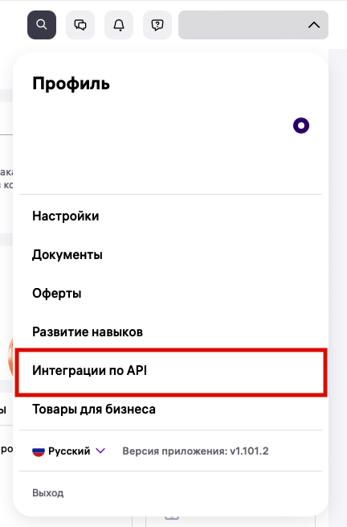
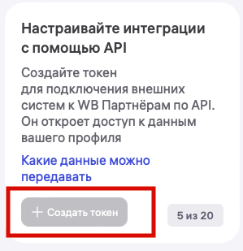
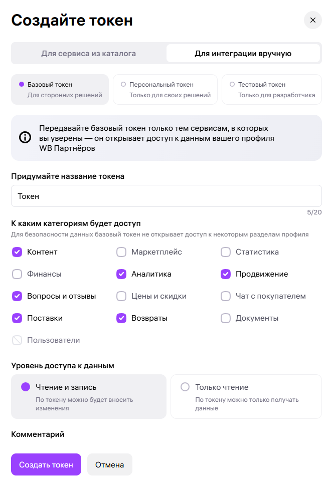

Получение API-токена Wildberries
Любая интеграция с Wildberries начинается с создания API-токена. Он позволяет MarketAut получать данные из личного кабинета продавца и выполнять действия от его имени в рамках предоставленных разрешений.
⚠️ Создать API-токен может только владелец личного кабинета Wildberries.
Откройте Портал продавца Wildberries и войдите в личный кабинет.
В левом меню откройте раздел «Настройки», затем выберите «Интеграции по API».

Нажмите кнопку «Создать токен».
Если API-токены уже создавались ранее, они будут отображаться на этой же странице.

В открывшемся окне перейдите на вкладку «Для интеграции вручную».
Именно этот вариант используется для подключения MarketAut.
Выберите «Базовый токен».
Этот тип токена предназначен для подключения сторонних сервисов и подходит для работы с MarketAut.
⚠️ Передавайте API-токен только тем сервисам, которым доверяете. Он предоставляет доступ к данным личного кабинета в пределах выбранных разрешений.

Название токена
В поле «Придумайте название токена» укажите любое удобное название.
Например:
MarketAut
Название используется только для удобства и помогает понять, для какого сервиса был создан токен.
Категории доступа
Для корректной работы основных функций MarketAut отметьте следующие категории:
- Контент;
- Вопросы и отзывы;
- Чат с покупателем.
Каждая категория отвечает за определённые возможности:
| Категория | Для чего используется |
|---|---|
| Контент | Работа с карточками товаров, характеристиками и фотографиями |
| Вопросы и отзывы | Просмотр вопросов и отзывов покупателей, а также отправка ответов |
| Чат с покупателем | Получение и отправка сообщений покупателям |
Уровень доступа
Для выбранных категорий установите уровень доступа «Чтение и запись».
Такой уровень позволяет MarketAut:
- отвечать на отзывы и вопросы;
- отправлять сообщения покупателям;
- изменять данные карточек товара;
- загружать фотографии;
- выполнять другие доступные действия через API Wildberries.
Если выбрать вариант «Только чтение», MarketAut сможет получать информацию, но не сможет вносить изменения.
Создание и копирование токена
Проверьте выбранные параметры и нажмите кнопку «Создать токен».
После создания нажмите «Скопировать».
⚠️ После закрытия окна повторно посмотреть полный API-токен невозможно. Если токен не был сохранён, потребуется создать новый.
Не публикуйте API-токен в открытом доступе и не передавайте его третьим лицам.
Добавление токена в MarketAut
Вернитесь в MarketAut и откройте настройки аккаунта Wildberries.
Вставьте скопированный API-токен в соответствующее поле и сохраните изменения.
После сохранения система проверит токен и подключит аккаунт Wildberries.
✅ После успешного подключения можно использовать инструменты MarketAut для работы с магазином Wildberries.